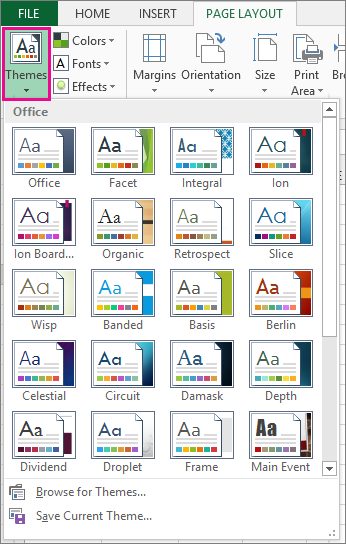
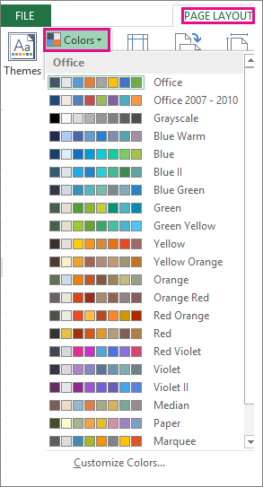
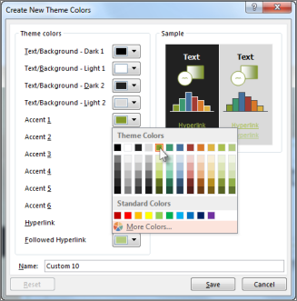
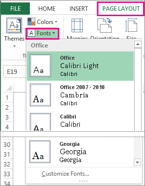
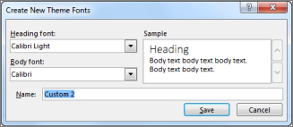
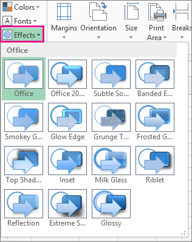
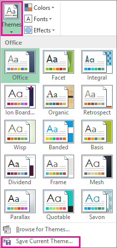
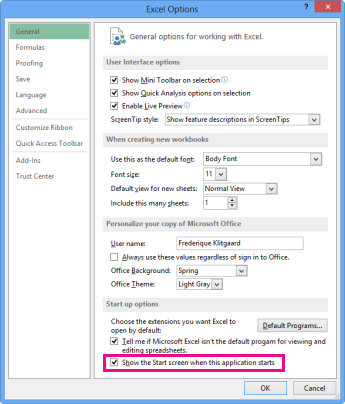

To change the text fonts, colors, or general look of objects in all worksheets of your workbook quickly, try switching to another theme or customizing a theme to meet your needs. If you like a specific theme, you can make it the default for all new workbooks.
To switch to another theme, click Page Layout > Themes, and pick the one you want.

To customize that theme, you can change its colors, fonts, and effects as needed, save them with the current theme, and make it the default theme for all new workbooks if you want.
Picking a different theme color palette or changing its colors will affect the available colors in the color picker and the colors you've used in your workbook.
Click Page Layout > Colors, and pick the set of colors you want.
The first set of colors is used in the current theme.

To create your own set of colors, click Customize Colors.
For each theme color you want to change, click the button next to that color, and pick a color under Theme Colors.

To add your own color, click More Colors, and then pick a color on the Standard tab or enter numbers on the Custom tab.
Tip: In the Sample box, you get a preview of the changes you made.
In the Name box, type a name for the new color set, and click Save.
Tip: You can click Reset before you click Save if you want to return to the original colors.
To save these new theme colors with the current theme, click Page Layout > Themes > Save Current Theme.
Picking a different theme font lets you change your text at once. For this to work, make sure Body and Heading fonts are used to format your text.
Click Page Layout > Fonts, and pick the set of fonts you want.
The first set of fonts is used in the current theme.

To create you own set of fonts, click Customize Fonts.
In the Create New Theme Fonts box, in the Heading font and Body font boxes, pick the fonts you want.

In the Name box, type a name for the new font set, and click Save.
To save these new theme fonts with the current theme, click Page Layout > Themes > Save Current Theme.
Picking a different set of effects changes the look of the objects you used in your worksheet by applying different types of borders and visual effects like shading and shadows.
Click Page Layout > Effects, and pick the set of effects you want.
The first set of effects is used in the current theme.

Note: You can't customize a set of effects.
To save the effects you selected with the current theme, click Page Layout > Themes > Save Current Theme.
After making changes to your theme, you can save it to use it again.
Click Page Layout > Themes > Save Current Theme.

In the File name box, type a name for the theme, and click Save.
Note: The theme is saved as a theme file (.thmx) in the Document Themes folder on your local drive and is automatically added to the list of custom themes that appear when you click Themes.
<Picture of custom theme goes here>
To use your custom theme for all new workbooks, apply it to a blank workbook and then save it as a templete named Book.xltx in the XLStart folder (typically C:\Users\user name\AppData\Local\Microsoft\Excel\XLStart).
To set up Excel so it automatically opens a new workbook that uses Book.xltx:
Click File>Options.
On the General tab, under Start up options, uncheck the Show the Start screen when this application starts box.

The next time you start Excel, it opens a workbook that uses Book.xltx.